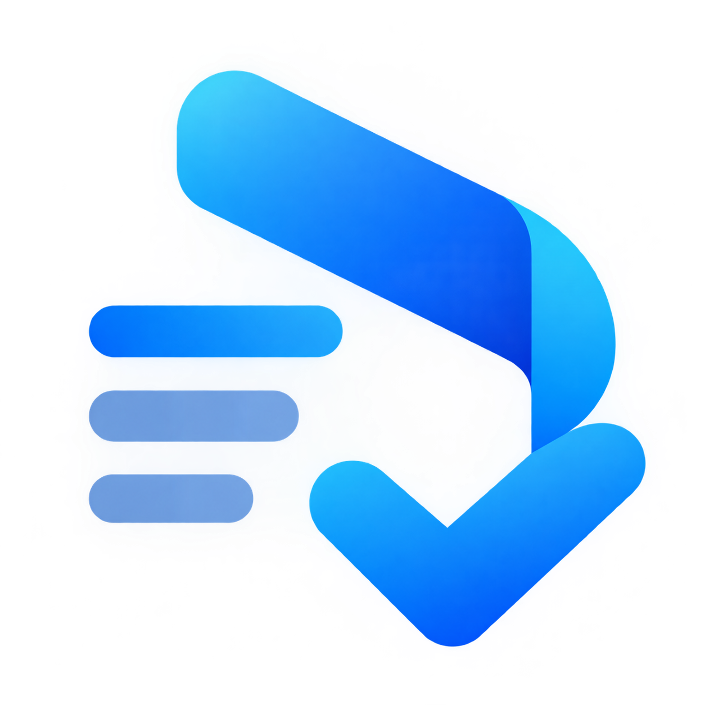

BeforeworkBeforework is a serverless, local-first project workspace. A workspace folder contains a manifest and separate JSON files for projects, so changes can be saved per project. Your files stay on your device or in a folder you choose to sync.
Beforework also keeps browser-local recovery snapshots. They do not sync with your workspace folder; export a snapshot or keep the folder in a synced location for portable recovery.
For access across devices, choose a folder in OneDrive, Google Drive, or another synced location. Sync is handled by that folder provider, not by Beforework.
Each project supports list, table, board, calendar, and milestone views, with tasks linked to project milestones to track checkpoint progress.
Choose a workspace root folder, create or open a workspace inside it, or connect an older single-file workspace.